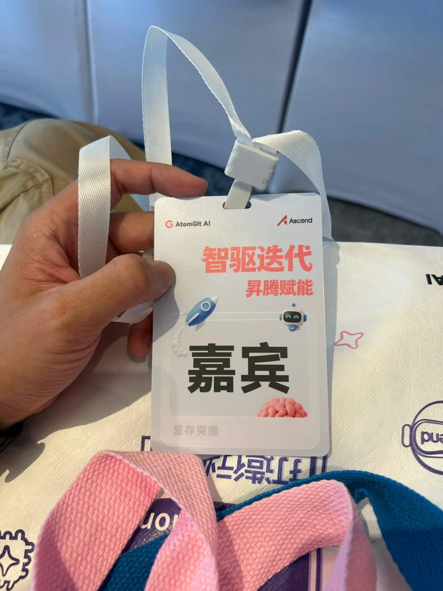
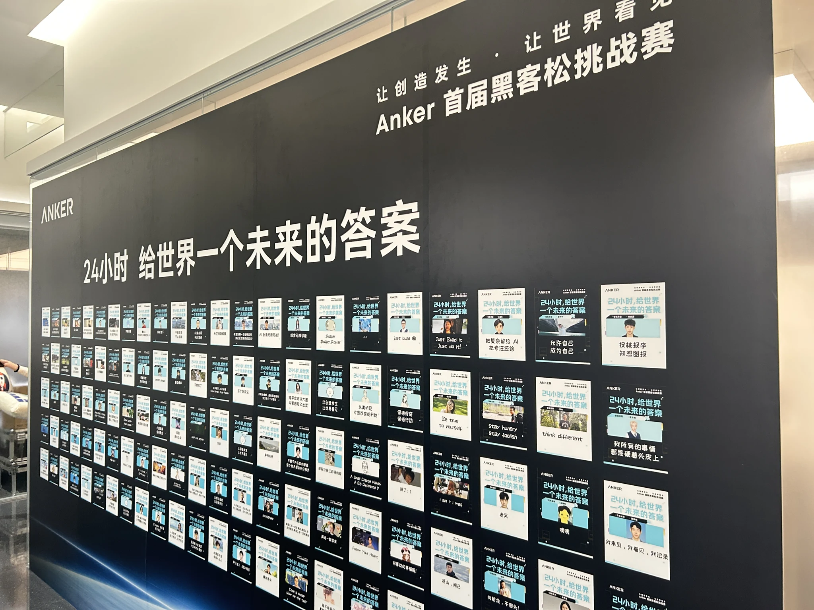
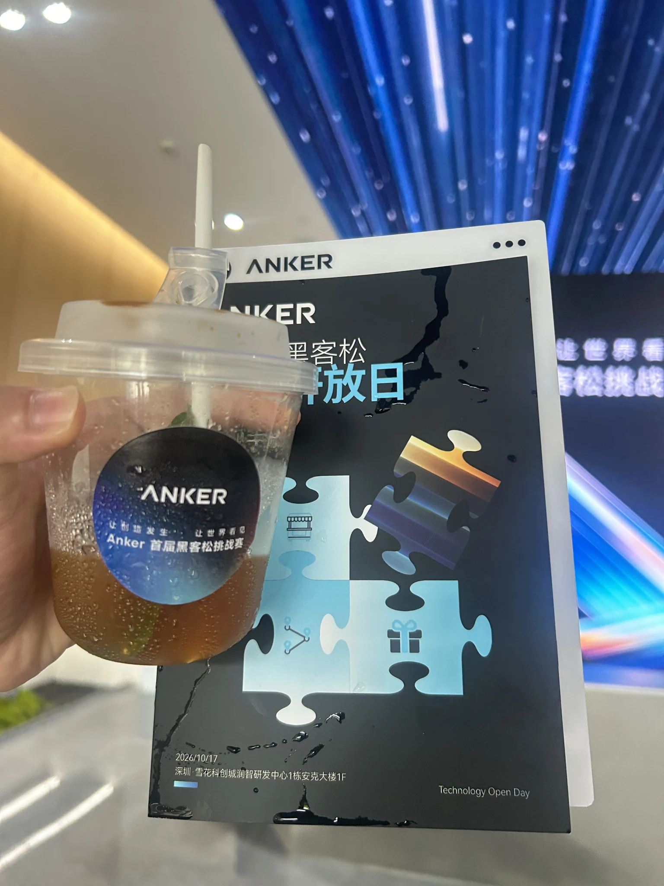
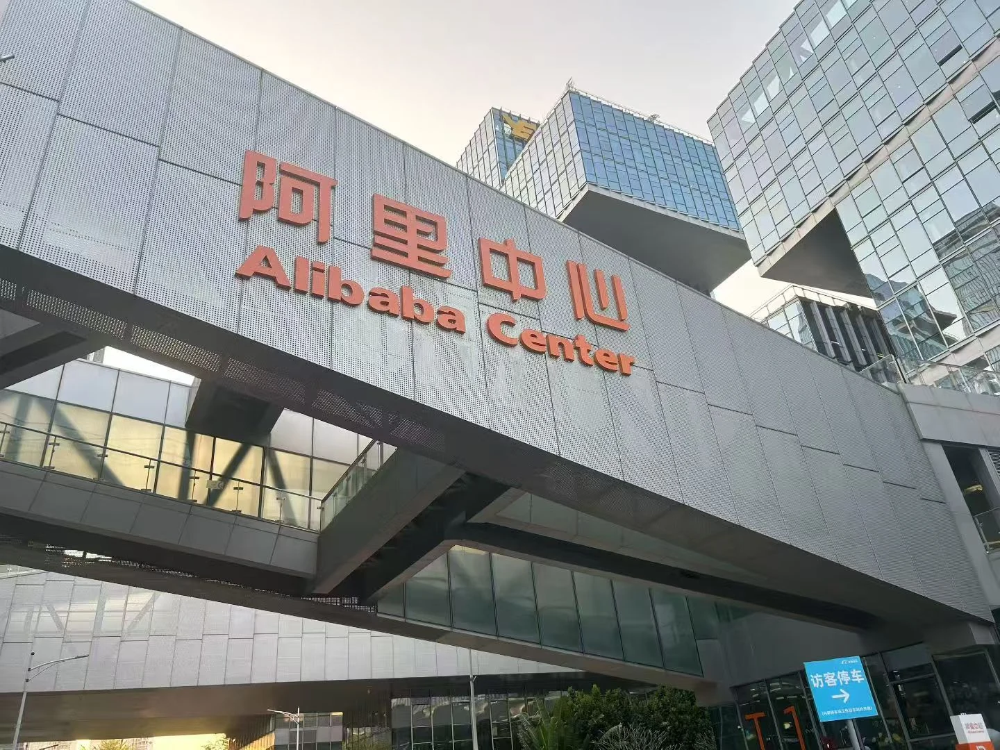
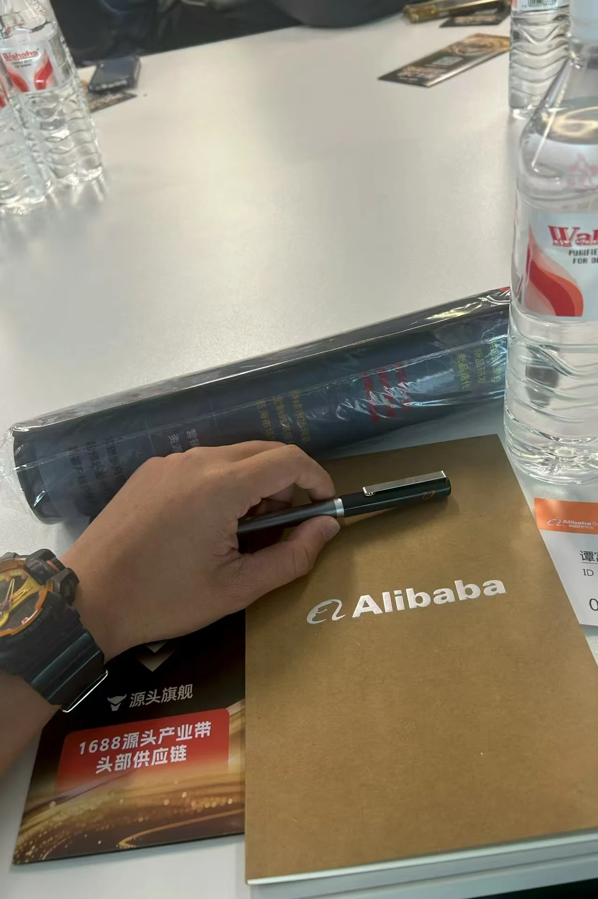

01 / AI COMMUNITY
AtomGit AI × 昇腾 Meetup
深圳 · 智驱迭代，昇腾赋能

围绕 AI 推理性能、成本与稳定性的技术交流。
LE / 谭先生
IDEAS, SYSTEMS & THINGS I MAKE.
继续向下，探索完整作品档案 ↓
CURIOUS BY NATURE. BUILDER BY CHOICE.
从一帧画面，到一段影像，再到一个可以运行的系统。
我用不同的工具，回答同一个问题：它能成为怎样的作品？
SELECTED WORK / 2024 — 2026
从商业视觉到软件产品，从一首歌到可走进的三维空间。
每个作品背后，都有具体的问题、选择和实现。
SOUND / ANOTHER WAY TO TELL A STORY
从歌词、旋律与声线，到筛选、修订和发行。
三首作品，直接听见。
THE COMPLETE PROJECT INDEX
产品、实验与创作，都有各自的位置。
按领域探索，点开查看图片、声音、视频与交互。
没有找到匹配项目，试试其他关键词。
EXPERIMENTS / BEYOND THE FLAT
让光线、材质与形态，在你的指尖发生变化。
本站实时三维交互 · 程序化形态实验
THE HUMAN BEHIND THE WORK
我是 Le，谭先生。
AI 综合应用实践者，
创作者与系统构建者。
从 GPT-3.5 与早期 Stable Diffusion 阶段开始，我持续探索 AI 能做到什么，以及如何把它带进真实场景。
我主导问题定义、方案选择、智能体编排、关键判断与验证交付。实践横跨工业滤波、个人 AI 工作系统、视频生成平台、软件产品与视觉创作。
多年电商经营经历，让我始终关心使用者、实际约束和最终结果。长期关注 AGI，持续扩展 AI 解决复杂问题的能力。
阅读完整简历 ↗技术与商业活动现场 ↘GPT-3.5 微信小程序
开发版上传
Microsoft × LinkedIn
生成式 AI 职业证书
Unity 工具产品
多平台发行实践
FIELD NOTES / PEOPLE, IDEAS & PRACTICE
技术交流、产品实践与电商经营。
在不同的现场，继续观察、学习与交流。
深圳 · 智驱迭代，昇腾赋能

围绕 AI 推理性能、成本与稳定性的技术交流。
2026.10.17 · 深圳


技术开放日现场，关注从想法到产品原型的实践。
电商实务 · 产业带与供应链


电商经营之外，也走进线下活动，接触平台与产业带的实际场景。
NEXT / LET’S MAKE IT HAPPEN.
开放工作与项目交流